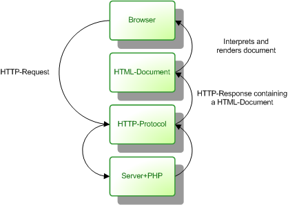
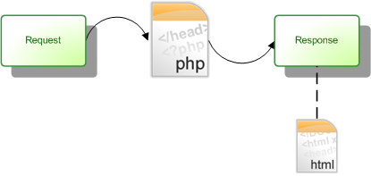
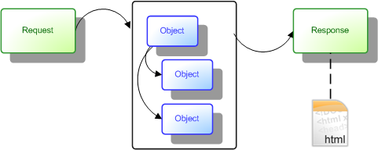

A web application is a program running on a server, which takes input (HTTP-request) and renders an output (HTTP-response). Dynamic, interpreted languages are often used for this. PHP is with its low barrier-to-entry a popular choice.
Traditionally web applications use a HTTP+HTML stack. Or put differently, the HTTP-response contains a HTML-document.

New trends (AJAX) extends the concept a bit, since the HTTP-response now can deliver other content-types than the traditional HTML (F.ex. JSON, XML, HTML-fragments).
For most applications, these alternate formats are merely supplements to the traditional HTTP+HTML.
The basic use of PHP is to let the web-server feed a requested file, which has a .php extension, through the PHP-processor. I refer to this approach as Vanilla PHP.
In Vanilla PHP applications there is only one component, involved in rendering the complete view (HTML-document). Although this component may use other components, these are subordinate to the main component. There is a 1:1 relationship between component and response.

While this strategy works fine with simple applications and prototypes, it doesn't hold in a complex GUI. It soon becomes important to divide the task into multiple components. The benefits of this includes:
k_FormBehaviour, k_Datalist
In a HTTP-response, there can only be one HTML-document. Therefore each component needs to be able to both render alone (deliver a HTML-document with appropriate HTTP-headers) or to be used in a context (generate only fragments of HTML).
Vanilla PHP has a lot of static/global dependencies. These will need to be decoupled, in order to use a component both alone and in context, without altering it.
Konstrukt aims to solve this dilemma by encapsulating components. The scope of each component is contained in a context. The context has the interface needed to interact with the HTTP layer, which in Vanilla PHP is corresponds to static functions such as header() and print(), and to global variables such as $_GET and $_POST.
While all components has a context, they can also act as a context for other components. The application thus becomes a hierarchy of component parents and children.
Since all components provides the same interface for their child-components, they can freely be moved around in the hierarchy, or even be used in multiple places. This feature allows for late binding of a component to it's context, where a parent component can decide its child components at runtime.
The world of PHP provides a plentitude of frameworks, so what sets Konstrukt apart from the rest?
The most important aspect of Konstrukt is to provide a set of rules, by which an application can be built. Thus it must be said to be a framework. It is however of a different kind than what most people associate with a web application framework these days.
Konstrukt is not a "full-service" framework in the style of Ruby on Rails, Zend Framework etc. Konstrukt only provides a small subset of what these do.
For example, Konstrukt provides a strategy for URL translation and URL-generation. The strategy is programmable, rather than being configurable/declarative. It takes some more effort by the programmer, but provides much greater flexibility.
These drawbacks all apply to Vanilla PHP, and as such there is no reason why you couldn't build a higher level framework on top of Konstrukt, to provide these features. However, the philosophy of Konstrukt, is to allow the programmer to write her own applications, rather than doing it for her. The API doesn't try to hide or simplify the underlying technology, but rather tries to provide a basic structure to interact with it.